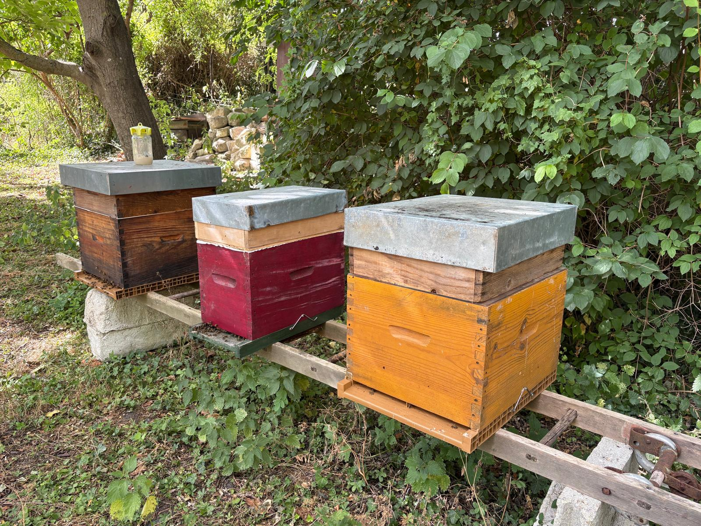
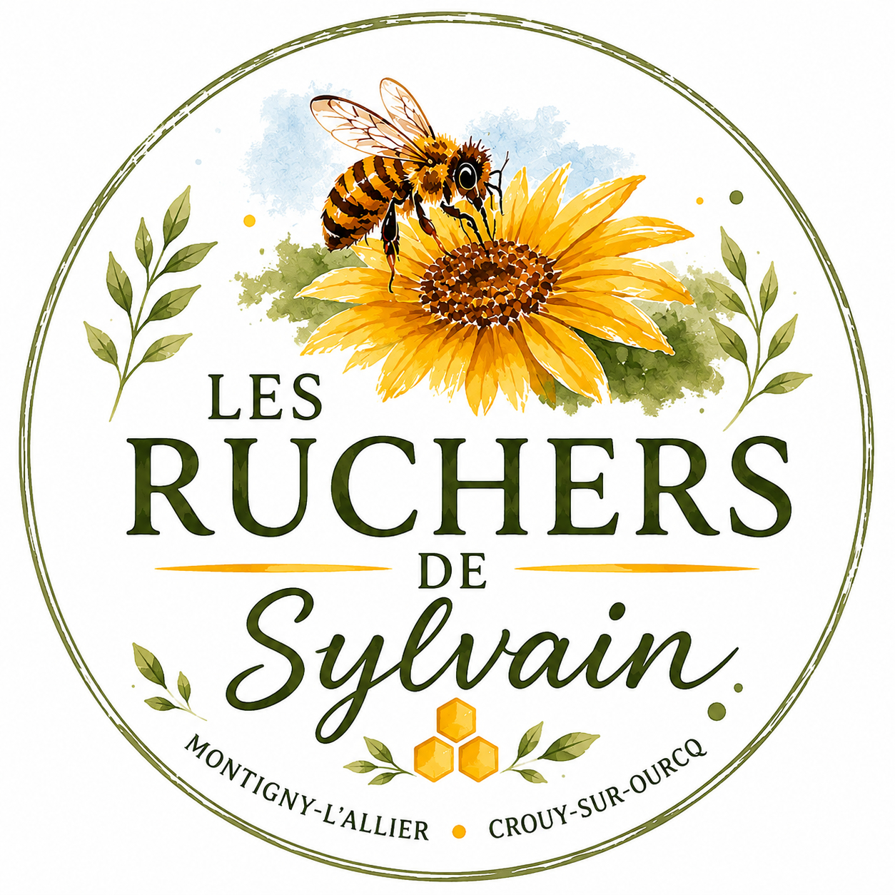
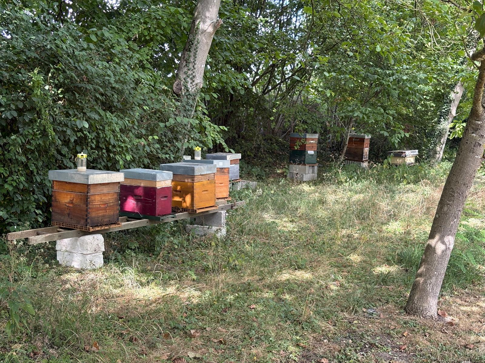
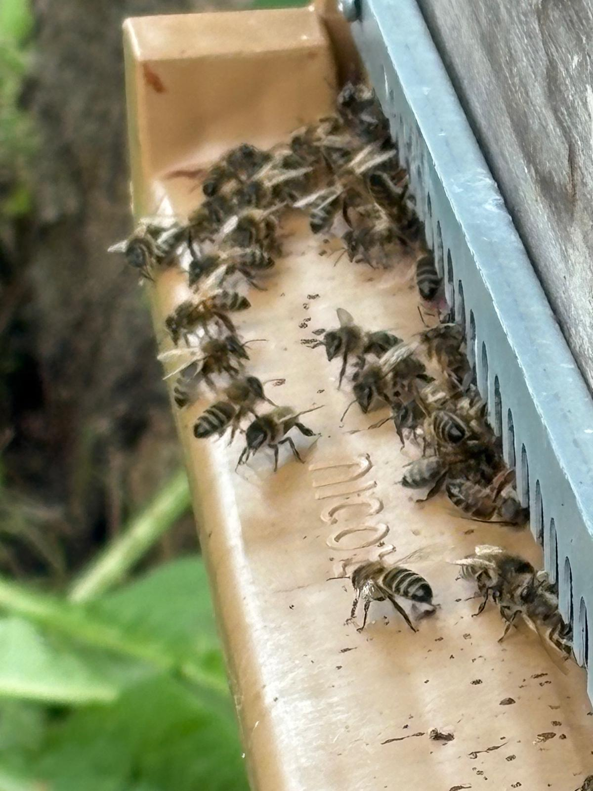
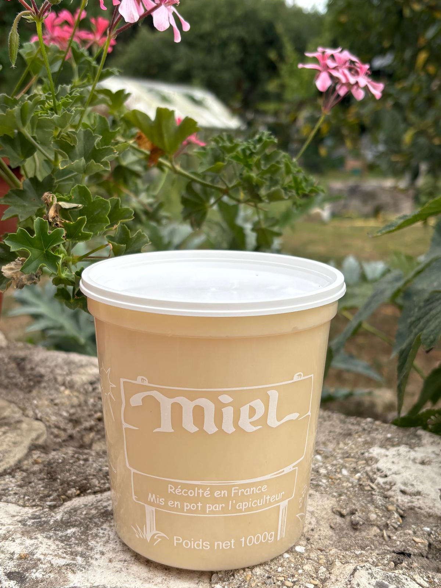
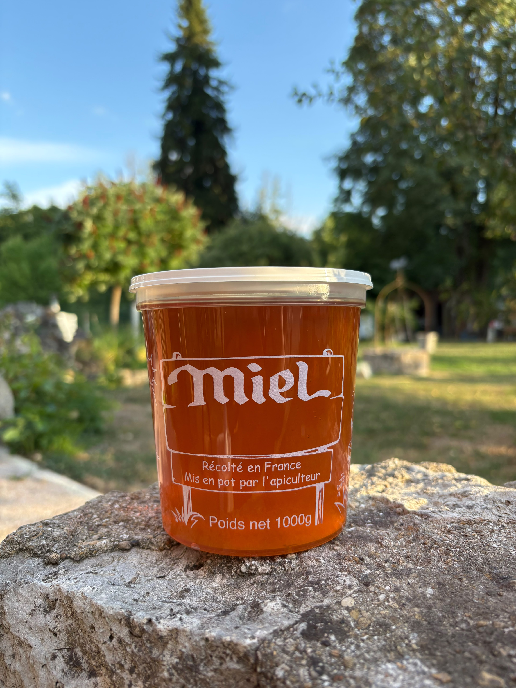
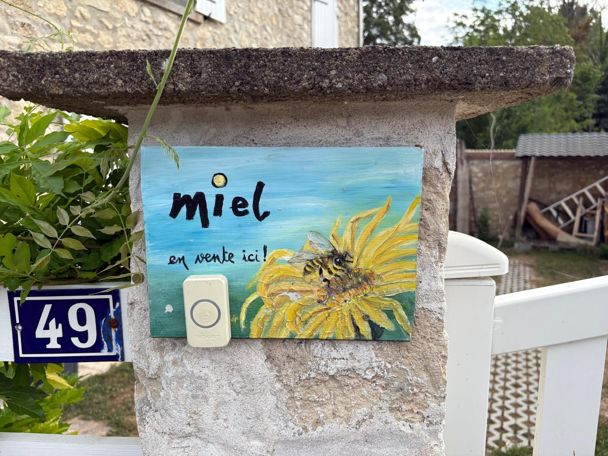

Aisne
Montigny-l'Allier
L'emplacement historique du Rucher dans le jardin de la maison familiale.

Apiculture familiale
À Montigny-l'Allier et Crouy-sur-Ourcq, l'apiculture est une histoire de famille, de transmission et de plaisir retrouvé au fil des générations.


Au rythme des coloniesUne passion transmise
L'apiculture est entrée dans la vie de Sylvain aux côtés de son père. Cette première rencontre avec le monde des abeilles a fait naître une passion qui ne l'a jamais quitté.
Plus récemment, il a accompagné sa tante dans la gestion de ses ruches avant de reprendre son cheptel, poursuivant ainsi une aventure familiale et un savoir-faire transmis au fil des générations.
Deux territoires
Deux secteurs complémentaires qui offrent aux abeilles des environnements variés et riches en ressources florales.

L'emplacement historique du Rucher dans le jardin de la maison familiale.
Le rucher de ma tante repris et entretenu dans la continuité de cette histoire apicole.
Au fil des saisons
Les récoltes reflètent directement les fleurs et les paysages qui entourent les ruchers. La production est limitée, mais dépasse la consommation familiale.

Premier miel de la saison, le miel de de printemps est récolté à la fin de la floraison des vastes champs jaunes qui illuminent nos paysages. Il est donc particulièrement riche en colza.
Sa couleur très claire, presque ivoire après cristallisation, et sa texture fine et onctueuse en font un miel particulièrement apprécié. Contrairement à d'autres miels plus liquides, le miel de colza cristallise naturellement très rapidement, ce qui lui confère une consistance crémeuse.
En bouche, il développe des arômes doux et délicats, avec des notes légèrement florales et végétales. Peu marqué, il convient parfaitement aux personnes recherchant un miel subtil et facile à apprécier au quotidien.
Si, avec le temps, le miel devient plus ferme que vous ne le souhaitez, il suffit de le réchauffer très doucement quelques minutes au bain-marie ou près d'une source de chaleur modérée.
⚠️ Évitez toutefois les températures trop élevées afin de préserver toutes les qualités gustatives et les propriétés naturelles du miel.
Un miel qui cristallise est un miel naturel. Cette évolution est un gage d'authenticité et ne modifie en rien sa qualité.

Un miel façonné par les floraisons rencontrées au fil de la saison. Sa couleur, ses arômes et son caractère évoluent naturellement d'une année à l'autre.
Chaque saison laisse sa trace
« Comme les vins reflètent leur terroir, chaque récolte de miel est le témoignage des fleurs butinées au cours de la saison. »
L'année 2025 a été particulière pour nos abeilles. À proximité de l'un de nos ruchers, un champ de sarrasin a offert une ressource mellifère abondante en fin d'été.
Cette floraison a influencé le caractère du miel récolté cette année-là, lui apportant des arômes plus intenses et une personnalité affirmée. Les amateurs ont pu y retrouver des notes plus rustiques et chaleureuses, différentes de celles observées lors des récoltes habituelles.
Comme les vins reflètent leur terroir, chaque récolte de miel est le témoignage des fleurs butinées par les abeilles au cours de la saison. Le miel de 2025 restera ainsi un millésime singulier dans l'histoire des Ruchers de Sylvain.
L'année 2026 a été marquée par des épisodes de fortes chaleurs et un déficit de précipitations tout au long de la saison. Ces conditions climatiques ont fortement réduit la production de nectar de nombreuses plantes mellifères et contraint les abeilles à rechercher leurs ressources sur une grande diversité de fleurs.
La récolte a ainsi été plus faible que les années précédentes, mais elle a donné naissance à un miel particulièrement original, reflet de la richesse florale rencontrée par les abeilles au cours de leurs déplacements.
Ce miel présente une palette aromatique variée, issue d'un mélange de nombreuses espèces florales butinées durant l'été. Son goût évolue en bouche et révèle des notes subtiles qui témoignent de cette saison exceptionnelle.
Chaque pot raconte l'histoire de l'année apicole : en 2026, celle d'abeilles particulièrement courageuses ayant dû parcourir de plus grandes distances pour trouver les ressources nécessaires à la vie de la colonie.
Chaque année est différente : c'est ce qui fait toute la richesse et l'authenticité du miel.
Du rucher au pot
Chaque saison apporte observations, découvertes et défis, au plus près du rythme naturel des colonies.
Le miel est récolté avec soin, en petites quantités, au gré des ressources disponibles et des saisons.
Le miel est extrait avec soin afin de préserver ses qualités et son caractère.
Le miel est ensuite harmonisé avec soin puis mis en pot à la main, sans ajout ni transformation.
Une apiculture de plaisir et de conviction
Mon objectif n’est pas de développer une production intensive, mais de conduire les ruches dans le respect du cycle naturel des colonies. Au printemps, les abeilles se multiplient naturellement par essaimage : une partie de la colonie quitte la ruche avec la reine pour fonder un nouvel essaim. Ce phénomène constitue le mode naturel de reproduction des abeilles mellifères. Toutes les colonies présentes aujourd’hui sur mes ruchers de Montigny-l’Allier et de Crouy-sur-Ourcq sont issues d’essaims naturels récupérés au fil des années. Ce choix permet de préserver des abeilles adaptées à leur environnement local tout en respectant au mieux leur fonctionnement naturel.
Les ruchers contribuent, à leur échelle, au maintien des pollinisateurs indispensables à la biodiversité et à la reproduction de nombreuses plantes. Chaque printemps, certains essaims s’échappent et ne sont pas récupérés : ceux qui poursuivent leur vie dans la nature participent eux aussi à la diffusion des abeilles et à l’enrichissement de la biodiversité locale. Les ruchers s’inscrivent ainsi dans une démarche qui accompagne les équilibres naturels plutôt qu’elle ne cherche à les contraindre.
Membre du Syndicat Apicole de Coulommiers, Sylvain participe aux échanges entre apiculteurs, poursuit sa formation et contribue à la promotion d’une apiculture responsable. Le soutien du Groupement de Défense Sanitaire Apicole (GDSA) permet également de préserver un bon état sanitaire des colonies grâce à des actions de prévention, de surveillance et de lutte contre les principaux dangers affectant les ruches, notamment le varroa et le frelon asiatique. Cet engagement collectif est essentiel pour assurer la pérennité des colonies et le développement durable de l’apiculture.
L’apiculture est avant tout une aventure familiale, fondée sur la transmission, le partage et la solidarité. Même si les ruchers sont gérés au quotidien par Sylvain, les frères, cousins, cousines, enfants et amis répondent régulièrement présents lorsqu’un coup de main est nécessaire, que ce soit pour la récolte du miel, la récupération d’un essaim, l’entretien du matériel ou les travaux du rucher. Chacun apporte son aide, son expérience ou simplement son enthousiasme, contribuant à faire vivre cette passion commune. Cette dimension conviviale et intergénérationnelle perpétue un savoir-faire familial tout en créant de précieux moments de partage autour des abeilles.

Local et directement auprès de l'apiculteur
Retrouvez notre miel directement à Montigny-l'Allier et lors de nos prochains marchés.
Vente directe
49 rue de la Commanderie
02810 Montigny-l'Allier
13 septembre 2026
Brocante de Montigny-l'Allier
19 et 20 septembre 2026
Marché artisanal des Médiévales du Houssoy
Au plaisir d'échanger
Montigny-l'Allier · Crouy-sur-Ourcq
Une question, une commande ou envie de nous rencontrer ? Écrivez-nous, nous vous répondrons avec plaisir.
Nous envoyer un message